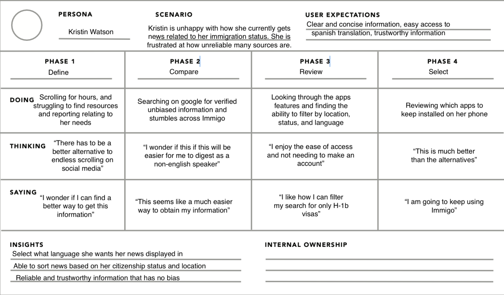

User Research
Our research began with a short survey distributed to individuals either directly impacted by U.S. immigration policy or closely connected to someone who is. This included immigrants on DACA, undocumented individuals, and those with temporary visas.
Key Stats
- 80% of respondents were either immigrants themselves or closely connected to one.
- 100% of those who responded about the Trump administration reported feeling worse about their immigration status due to increased uncertainty and fear.
- The majority of immigrants got their news from social media platforms like Instagram, Facebook, and YouTube.
Participant Quotes
- “Potential loss of DACA along with work permits.”
- “Uncertainty about different administrations.”
- “More clear information on advanced parole… I have searched for hours online with little luck.”
- “Anything that would not be generally covered by mainstream media.”
Key Findings
- There is a strong desire for clarity. Many immigrants struggle to find trustworthy, up-to-date information on policy changes
- Users expressed interest in a centralized tool for real-time immigration updates
- Few have reached out to lawmakers, usually due to lack of awareness or accessible tools to do so.
This user feedback shaped the foundation of ImmiGo’s mission: to simplify and centralize access to immigration policy updates and personalized alerts.
Personas
Kristin Watson is a 27 year old H1-B holder from Venezuela. We used her persona to better understand how our target population will interact with our app.
User Journey Maps
Below is a journey map of our featured persona Kristin Watson. This highlights the steps she takes to choosing ImmiGo.

Storyboards
Changing the Language of the Application Storyboard


Accessing Articles and Home Feed Storyboard


Search and Filtering Status Storyboard


Design Iterations & Rationale
[Explain changes over time with rationale based on testing and feedback]